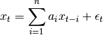
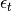
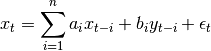
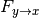
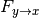
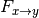

Granger ‘causality’ of fMRI data¶
Granger ‘causality’ analysis provides an asymmetric measure of the coupling between two time-series. When discussing this analysis method, we will put the word ‘causality’ in single quotes, as we believe that use of this word outside of quotes should be reserved for particular circumstances, often not fulfilled in the analysis of simultaneously recorder neuroscientific time-series (see [Pearl2009] for an extensive discussion of this distinction).
The central idea behind this analysis is that time-series can be described in terms of a time-delayed auto-regressive model of the form:

Here, a the past behaviour of a single time-series is used in order to predict the current value of the time-series. In Granger ‘causality’ analysis, we test whether the addition of a prediction of the time-series from another time-series through a multi-variate auto-regressive model may improve our prediction of the present behavior of the time-series (reducing the value of the error term ):

In our implementation of the algorithms used for this analysis, we follow closely the description put forth by Ding et al. ([Ding2006]). Also, see Mulitvariate auto-regressive modeling and Fitting an AR model: algorithm module interface for examples even more closely modeled on the examples mentioned in their paper.
Here, we will demonstrate the use of Granger ‘causality’ analysis with fMRI data. The data is provided as part of the distribution and is taken from a ‘resting state’ scan. The data was motion corrected and averaged from several ROIs.
We start by importing the needed modules:
import os
import numpy as np
import matplotlib.pyplot as plt
from matplotlib.mlab import csv2rec
import nitime
import nitime.analysis as nta
import nitime.timeseries as ts
import nitime.utils as tsu
from nitime.viz import drawmatrix_channels
We then define a few parameters of the data: the TR and the bounds on the frequency band of interest.
TR = 1.89
f_ub = 0.15
f_lb = 0.02
We read in the resting state fMRI data into a recarray from a csv file:
data_path = os.path.join(nitime.__path__[0], 'data')
data_rec = csv2rec(os.path.join(data_path, 'fmri_timeseries.csv'))
roi_names = np.array(data_rec.dtype.names)
nseq = len(roi_names)
n_samples = data_rec.shape[0]
data = np.zeros((nseq, n_samples))
for n_idx, roi in enumerate(roi_names):
data[n_idx] = data_rec[roi]
We normalize the data in each of the ROIs to be in units of % change and initialize the TimeSeries object:
pdata = tsu.percent_change(data)
time_series = ts.TimeSeries(pdata, sampling_interval=TR)
We initialize the GrangerAnalyzer object, while specifying the order of the autoregressive model to be 1 (predict the current behavior of the time-series based on one time-point back).
G = nta.GrangerAnalyzer(time_series, order=1)
For comparison, we also initialize a CoherenceAnalyzer and a CorrelationAnalyzer, with the same TimeSeries object
C1 = nta.CoherenceAnalyzer(time_series)
C2 = nta.CorrelationAnalyzer(time_series)
We are only interested in the physiologically relevant frequency band (approximately 0.02 to 0.15 Hz).
The spectral resolution is different in these two different analyzers. In the CoherenceAnalyzer, the spectral resolution depends on the size of the window used for calculating the spectral density and cross-spectrum, whereas in the GrangerAnalyzer it is derived, as determined by the user, from the MAR model used.
For this reason, the indices used to access the relevant part of the spectrum will be different in the different analyzers.
freq_idx_G = np.where((G.frequencies > f_lb) * (G.frequencies < f_ub))[0]
freq_idx_C = np.where((C1.frequencies > f_lb) * (C1.frequencies < f_ub))[0]
We plot the ‘causality’ from x to y ( ) and from y to x
( for the first two ROIs and compare to the coherence
between these two time-series:
) and from y to x
( for the first two ROIs and compare to the coherence
between these two time-series:
coh = np.mean(C1.coherence[:, :, freq_idx_C], -1) # Averaging on the last dimension
g1 = np.mean(G.causality_xy[:, :, freq_idx_G], -1)
fig01 = drawmatrix_channels(coh, roi_names, size=[10., 10.], color_anchor=0)

fig02 = drawmatrix_channels(C2.corrcoef, roi_names, size=[10., 10.], color_anchor=0)

fig03 = drawmatrix_channels(g1, roi_names, size=[10., 10.], color_anchor=0)
{kind=link}
Differences in the HRF between different ROIs are a potential source of
misattribution of the direction and magnitude of dependence between time-series
in fMRI data (for a particularly extreme example of that see
[David2008]). Therefore, as suggested by Roebroeck et al. [Roebroeck2005] and
[Kayser2009] we turn to examine the difference between  and

g2 = np.mean(G.causality_xy[:, :, freq_idx_G] - G.causality_yx[:, :, freq_idx_G], -1)
fig04 = drawmatrix_channels(g2, roi_names, size=[10., 10.], color_anchor=0)

If these values are found to be significantly different than 0, this constitutes evidence for a correlation with a time-lag between the regions. This is a necessary (though not necessarily sufficient...) condition for establishing functional connectivity between the regions.
Finally, we call plt.show(), to show the plots created:
plt.show()
References¶
| [Pearl2009] | J. Pearl (2009). Causal inference in statistics: An overview. Statistics surveys 3: 96-146. |
| [Ding2008] | M. Ding, Y. Chen, S.L. Bressler (2006) Granger causality: basic theory and application to neuroscience. In Handbook of Time Series Analysis, ed. B. Schelter, M. Winterhalder, and J. Timmer, Wiley-VCH Verlage, 2006: 451-474 |
| [Roebroeck2005] | A. Roebroeck, E., Formisano R. Goebel (2005). Mapping directed influence over the brain using Granger causality and fMRI. NeuroImage 25: 230-242. |
| [Kayser2009] | A. Kayser, F. Sun, M. D’Esposito (2009). A comparison of Granger causality and coherency in fMRI-based analysis of the motor system. NeuroImage 30: 3475-94 |
| [David2008] | O. David, I. Guillemain, S. Saillet, S. Reyt, C. Deransart, C. Segebarth, A. Depaulis (2008). Identifying neural drivers with functional MRI: An electrophysiological validation. PLoS Biol 6:e315 |
Example source code
You can download the full source code of this example.
This same script is also included in the Nitime source distribution under the
doc/examples/ directory.